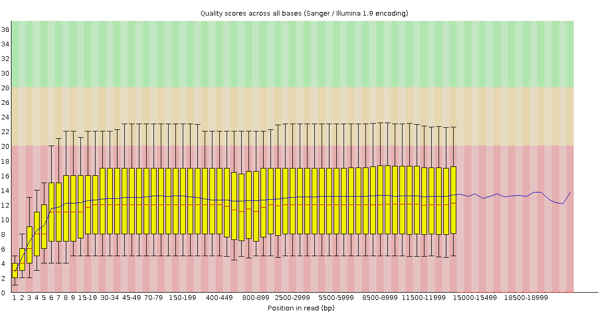
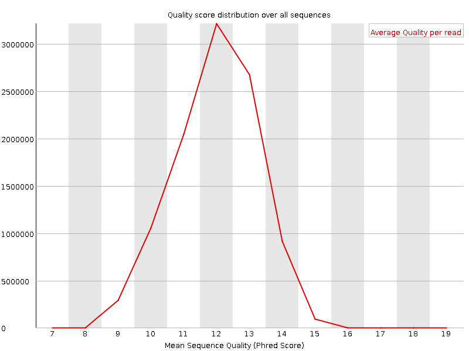
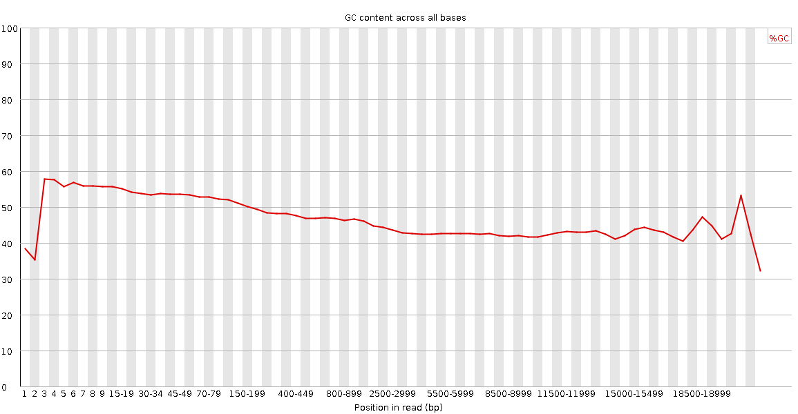
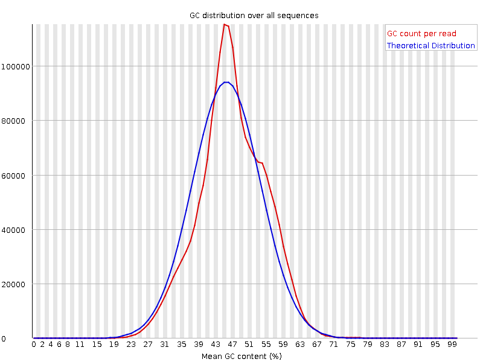
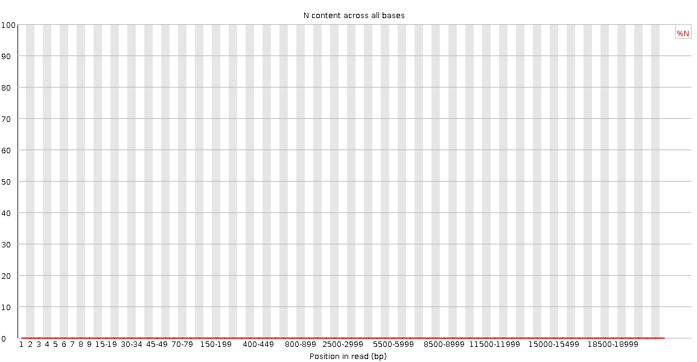
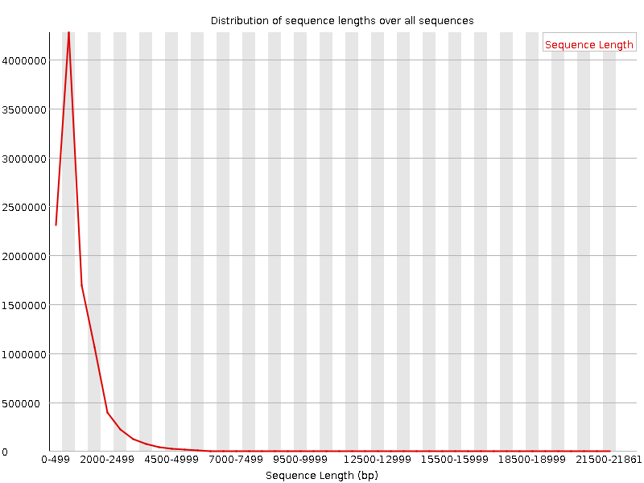
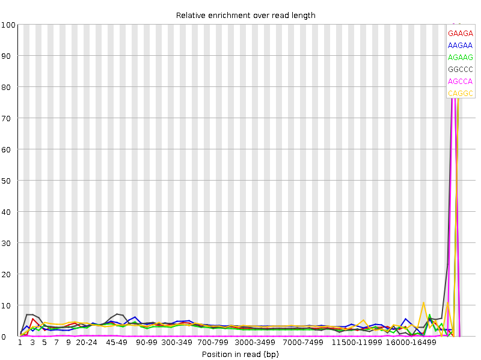

![[OK]](Icons/tick.png) Basic Statistics
Basic Statistics
| Measure | Value |
|---|---|
| Filename | NA12878-DirectRNA.pass.dedup.fastq.gz |
| File type | Conventional base calls |
| Encoding | Sanger / Illumina 1.9 |
| Total Sequences | 10302647 |
| Filtered Sequences | 0 |
| Sequence length | 15-21860 |
| %GC | 63 |
![[FAIL]](Icons/error.png) Per base sequence quality
Per base sequence quality

Per sequence quality scores

Per base sequence content

Per base GC content

![[WARN]](Icons/warning.png) Per sequence GC content
Per sequence GC content

Per base N content

Sequence Length Distribution

Sequence Duplication Levels

Overrepresented sequences
No overrepresented sequences
Kmer Content

| Sequence | Count | Obs/Exp Overall | Obs/Exp Max | Max Obs/Exp Position |
|---|---|---|---|---|
| GAAGA | 32211565 | 0.66204154 | 19.252476 | 20000-20086 |
| AAGAA | 36391320 | 0.65064216 | 16.538446 | 20000-20086 |
| AGAAG | 30890160 | 0.6348828 | 21.459549 | 20000-20086 |
| GGCCC | 13232160 | 0.36734724 | 10.120227 | 19500-19999 |
| AGCCA | 16533560 | 0.3612095 | 230.95908 | 19500-19999 |
| CAGGC | 14140990 | 0.3551417 | 9.833323 | 20000-20086 |
| AGGGC | 10473445 | 0.27353707 | 7.0795274 | 19000-19499 |
| CCCGG | 8775220 | 0.24361503 | 15.446664 | 19000-19499 |
| GGGGA | 8669260 | 0.235458 | 6.287447 | 19000-19499 |
| GAACC | 9521705 | 0.20802116 | 12.83106 | 20000-20086 |
| CGAGG | 7129445 | 0.18620114 | 7.0795264 | 20000-20086 |
| GAGGG | 6337730 | 0.17213342 | 7.362225 | 19000-19499 |
| GCGGA | 6408690 | 0.16737705 | 5.634726 | 19000-19499 |
| CCCCC | 5294560 | 0.13591467 | 5.0255656 | 19500-19999 |
| GACCG | 5108080 | 0.12828608 | 22.124977 | 18000-18499 |
| AGCGA | 4635625 | 0.1053188 | 5.3973403 | 19000-19499 |
| AACCG | 4227340 | 0.09235491 | 9.623295 | 18000-18499 |
| GCGAC | 3601095 | 0.09043914 | 33.18746 | 19000-19499 |
| CGACG | 3210795 | 0.08063701 | 29.499968 | 19000-19499 |